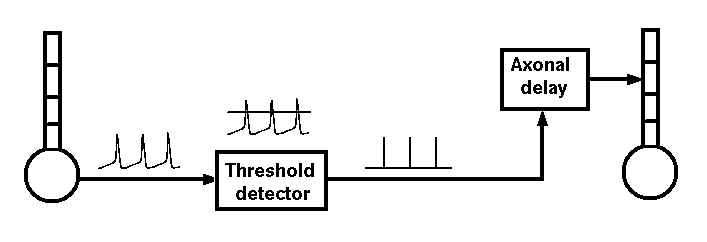

We have already added an exitatory and an inhibitory synaptically activated channel to the /cell/dend compartment, and a spike element to the soma, but haven't yet made any use of them.
Usually, we can treat an axon as a simple delay line for the delivery of spike events that last a single time step. Only if we are interested in understanding the details of axonal propagation would it be necessary to model the axon as a series of linked compartments.

The properties of an axon are split between two types of GENESIS objects. Spiking class objects (spikegen or randomspike) create the spike events, either when Vm crosses a threshold during an action potential (spikegen), or as a random series of events generated at a specified average rate (randomspike). These send SPIKE messages to a synchannel class element (synchan, hebbsynchan, or facsynchan), which contains fields for the propagation delays and synaptic weighting for each synaptic connection.
For example, to send somatic action potentials in cell1 to a synchan element Ex_channel in the dendrite compartment of cell2, you might use:
create spikegen /cell1/soma/spike setfield /cell1/soma/spike thresh 0 abs_refract 0.005 output_amp 1 addmsg /cell1/soma /cell1/soma/spike INPUT Vm addmsg /cell1/soma/spike /cell2/dend/Ex_channel SPIKE setfield /cell2/dend/Ex_channel synapse[0].weight 10 synapse[0].delay 0.005
In this example, a spike is generated by the spikegen when the soma Vm exceeds the threshold value of 0.
The field 'abs_refract' has been set to 0.005 (5 msec) in order to prevent multiple spikes from being generated during the time that Vm is above threshold. Normally, abs_refract will be set to something greater than the maximum width of the action potential at threshold, and less than the minimum expected interspike interval. Note that the true absolute refractory period of a neuron is determined by the dynamics of the conductances that produce the action potentials. The abs_refract field of a spikegen would only be used to set an absolute refractory period for firing when using highly simplified neuron models, or artificial inputs that need to generate spikes with a specified minimum period.
Each time a new SPIKE message is added, it creates a new synapse within the synchan. Here, this synaptic connection is labeled as "synapse[0]", as it was the first (of possibly several) to be established with the SPIKE message.
In order to understand more about the use of these synaptically activated channels, you will need to read the documentation for Synaptic Connections in the GENESIS Reference Manual, and the documentation for synchan, spikegen, and randomspike. It will also be helpful to look at genesis/Scripts/neurokit/prototypes/synchans.g in order to understand the properties of the channels Ex_channel and Inh_channel in /cell/dend. The WAM-BAMM 2005 Advanced Tutorial "Simulating in vivo-like synaptic input patterns in multicompartmental models" (Edgerton, 2005) describes how realistic spike trains can be generated as probability distributions, or read from experimental data. The electronically published version may be viewed at http://www.brains-minds-media.org/archive/225.
Then, try this simple exercise:
Modify the simplecell.g script to add a randomspike element with an average spike rate of 200 spikes per second. Connect it to /cell/dend/Ex_channel, and set the soma current injection to zero. If you would like to play with XODUS graphics some more, plot the Ex_channel conductance Gk on another graph.
If you get stuck, look at tutorial4.g ("the hard way") or tutorial5.g (with readcell). In addition to the random spike input, these scripts illustrate the coupling of a cell's spike output to a synchan, by providing a feedback connection from the cell to itself. Chapter 15 of the BoG gives a detailed description of the steps in the construction of tutorial4.g.
Once you feel that you are ready, continue to the next section of this tutorial. This provides a more realistic exercise that connects two cells to each other to form a pattern generator circuit.
The goal of this exercise is to create a simple network of two cells that fire in alternate bursts. This will be made from two cells derived from the one created in the simplecell simulation, called /cell1 and /cell2. After you feel that you understand simplecell.g and its included files, and have studied the documentation on the use of the synchan and spikegen objects, copy the cells/simplecell files into a directory of your own. Then, make the changes necessary to create a second cell with no current injection, and plot its Vm on the graph in a different color. Of course, the plot will be a flat line, as it is receiving no stimulus.
Then, use what you have learned about synaptic connections to connect the spike output of cell1 to the excitatory synchan of cell2, and the spike output of cell2 to the inhibitory input of cell1. Use an axonal propagation delay of 0.005 seconds for each connection. Finally, experiment with the synaptic weights for each synapse until you can achieve a pattern of alternate bursts of action potentials. To make it easy to change the weights, you may wish to add dialog boxes for entering weights to the control panel.
Gap junctions provide another way that neurons can interact, but without chemical synapses. The exercise in exercises/gap_junctions suggests how you might add dendrodendritic connections between interneurons via gap junctions ("electical synapses").
Detour: Implementing synaptic plasticity
In these examples, the value of the synaptic weight has been held fixed. In any biological cortical network, the response of cells to synaptic inputs varies with time. The tutorial on Implementing synaptic plasticity describes how phenomena such as long term potentiation and depression (LTP and LTD) may be efficiently implemented in GENESIS.
The approach used in this tutorial may also be used to create larger networks. However, GENESIS has a number of commands that are intended specifically to create large arrays of cells and to connect them into a network, with just a few lines of scripting code. That is the subject of the next section.
Edgerton J (2005) Simulating in vivo-like synaptic input patterns in multicompartmental models. Brains, Minds, and Media. 1: bmm225 (http://www.brains-minds-media.org/)
Digression: Implementing synaptic plasticity